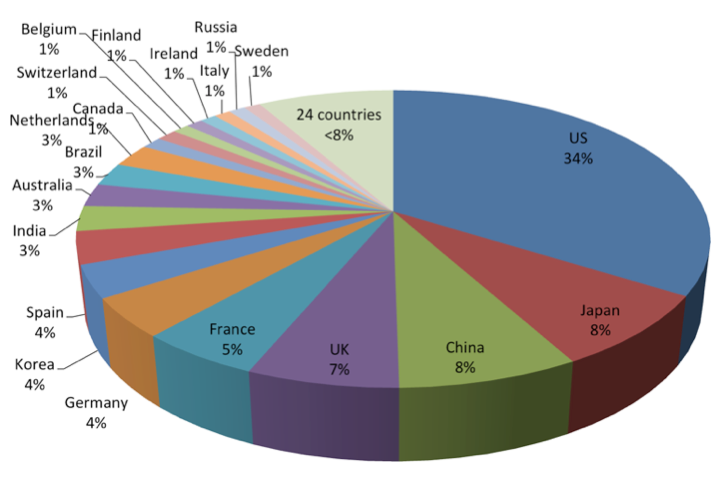
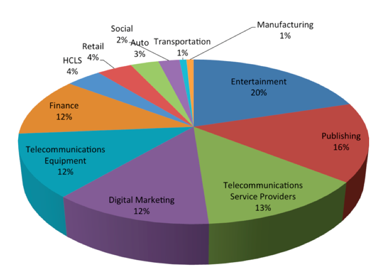
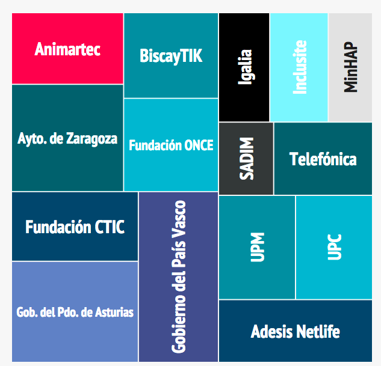

Tu futuro en la Web
W3C y Publicación Digital
Madrid, 13 mayo 2016
World Wide Web Consortium
- Organismo neutro
- Fundado en 1994 por Tim Berners-Lee
- 82 personas en el Team
- 418 Miembros
- +70 Grupos del W3C (con más de 1.500 investigadores)
{kind=link}
Miembros en el mundo

Miembros por industria


Actividades verticales en W3C
- Entretenimiento
- Edición Digital
- Pagos en la Web
- Automoción
- Telecomunicaciones
- Web Social
- Marketing Digital
Siempre manteniendo las horizontales
- Seguridad, Privacidad
- WAI
- Datos
- Web of Things (WoT)
Digital Publishing
IDPF -> W3C

Relaciones con otros organismos
- IDPF
- BISG
- EDItEUR
- IPTC
- Daisy Consortium
- …
Grupos especiales dentro de DPUB IG
- Anotaciones
- Diseño y estilos
- Metadatos
- Contenido y etiquetado
- Accesibilidad
- STEM (Science, Technology, Engineering, Maths)
Especificaciones relevantes
Otros grupos
Browers + Web Apps
- CSS WG
- Device APIs (DAP) WG
- HTML WG
- Pointer Events WG
- SVG WG
- Second Screen WG
- System Applications WG
- Timed Text (TT) WG
- Web Annotation WG
- Web Applications (WebApps) WG
- Web Performance WG
- Web RTC WG
Horizontales
- Privacy IG
- Technical Architecture Group (TAG)
- Web Mobile IG
Seguridad
- Web Application Security WG
- Web Cryptography WG
- Web Security IG
- XML Security WG
Participantes
Commercial Publishers
- Hachette
- Hal Leonard
- Pearson
- Safari
- Wiley
eReaders
- Apple
- Bluefire Productions
- Rakuten
Publishing Service Providers
- Adobe
- Antenna House
- Benetech
- Copyright Clearance Center
- Igalia
- Cornac Servicios Editoriales
- Monotype Imaging
- Vivliostyle
- INNOVIMAX
Publishing Trade Organizations
- BISG
- DAISY Consortium
- IDPF
- Int’l Web Masters Assoc.
- Web 3D Consortium
Libraries, Academia
- iMinds
- MIND Center
- PUC-Rio
- Stanford
- Univeristy of Illinois
Other Document Publishers
- Bloomberg
- Canon
- Educational Testing Service
- IBM
- Intel
Gov’t
- CDAC (India)
- DISA (USA)
Y mucho más
- http://www.w3c.es
- martin@w3.org
- Imágenes:
- Bookshop por Nik Stanbridge